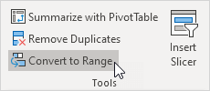

Shade Alternate Rows
Use Conditional Formatting | Apply a Table Style
To shade alternate rows in Excel, use conditional formatting or apply a table style. Coloring every other row makes it easier to read your data.
Use Conditional Formatting
First, let's use conditional formatting to shade/highlight every other row in Excel.
1. For example, select the range A1:D15 below.
Note: to apply the shading to the entire worksheet, select all cells on a worksheet by clicking the Select All button (see orange arrow).
2. On the Home tab, in the Styles group, click Conditional Formatting.

3. Click New Rule.

4. Select 'Use a formula to determine which cells to format'.
5. Enter the formula =MOD(ROW(),2)=0
6. Select a formatting style and click OK.
Result.
Explanation: the MOD function gives the remainder of a division. The ROW function returns the row number of a cell. For example, for the seventh row, MOD(7,2) = 1 because 7 divided by 2 equals 3 with a remainder of 1. For the eight row, MOD(8,2) = 0 because 8 divided by 2 equals 4 with a remainder of 0. As a result, all cells in even rows return 0 and will be shaded.
Apply a Table Style
If you're not a formula hero, apply a table style to quickly color alternate rows in Excel.
1. Select any cell within a range.

2. On the Home tab, in the Styles group, click Format as Table.
3. Choose a table style with alternate row shading.
4. Click OK.
Result.
To change the color shading from rows to columns, execute the following steps.
5. First, select a cell inside the table. Next, on the Table Design tab, in the Table Styles Options group, uncheck Banded Rows and check Banded Columns.
Result.
Note: use the filter arrows to sort and filter this table. Visit our Guide about tables to learn more about this topic.
To convert this table into a normal range of cells (with banded rows or banded columns), execute the following steps.
6. First, select a cell inside the table. Next, on the Table Design tab, in the Tools group, click Convert to Range.

Result.
Tip: use Excel VBA to highlight the row and column of the Active Cell (selected cell). This program will amaze and impress your boss.